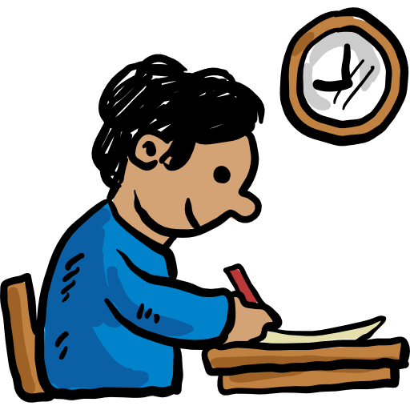
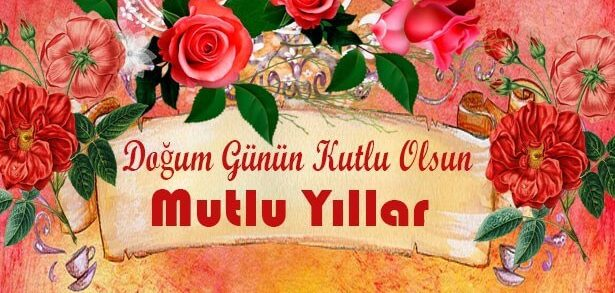
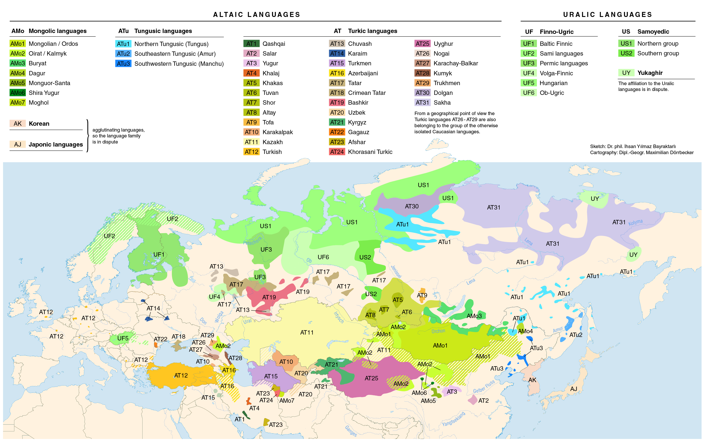

Привіт
Цей сайт являється посібником для вивчення Турецької мови. Тут ти зможеш багато чому навчитися, а також перевірити свої знання.
Матеріал для лекцій був взятий з turkiyem.ru. Матеріал для тестів був взятий з slides.com/developers.
Created by Elaine Z1rael
Можливості
На сайті є можливість вивчати Лексику та Граматику. Для кожної з цих двух дисциплін представлено по 10 лекцій.
Після кожної лекції тебе чекає коротенький тест для визначення власних можливостей.

Лексика
Лексика представлена в 10 темах, а саме:

Граматика
Турецька мова — мова урало-алтайської сім'ї. Це цілком логічно, без статі та лише кількох виняткових правил, але його аглютинативна структура настільки відрізняється від індоєвропейських мов, що носіям цих мов може спочатку вивчити її граматику. (Аглютинація означає, що слова та речення утворюються шляхом додавання суфіксів до кореневого слова.)
Теми:

Перевірка знань
Як вже і було описано, знання будуть перевірятися з допомогою тесту після кожної пройденої теми. Тобто 20 тестів з 20 тем. Ось список джерел які використовувались для створення тестів.
Головний тест
Головний тест це тест який буде доступний після виконання Вами усіх 20 тестів з лексики та граматики. Тест включатиме по одному питанню з кожної теми, щоб Ви могли дізнатися наскільки добре пройшли курс.